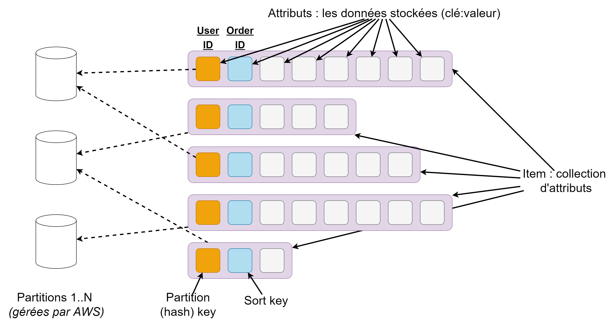

Cloud Computing, CM4
Stockage de données dans le Cloud
Pépin Rémi, Ensai, 2024
remi.pepin@insee.fr
Le stockage de données dans le cloud
Les différents services de stockage

Les différents services de stockage 1/2
- Stockage block : données directement sur un disque dur (SSH/HDD). Pour stocker des données pour une VM. AWS EBS, GCP Persistent Disk
- Stockage réseau : données sur un stockage partagé entre plusieurs VM. Pensez aux dossiers partagés de l'Ensai. AWS EFS, GCP Filestore, Azure Files
- Stockage objet : données stockées sur des serveurs distants. Pas de point de montage sur la machine. Fichiers accessibles via API REST. AWS S3, GCP Cloud Storage, Azure Blob Storage
Les différents services de stockage 2/2
- Base de données relationnelle : pour des données tabulaires. On ne stocke plus un fichier mais des données structurées et on utilise SQL pour les requêter. Possibilité de faire des jointures. AWS RDS, GCP Cloud SQL
- Base de données no-SQL : pour des données semi structurées voir non structurées. Interaction avec les données possibles, par contre plus de jointure en général. AWS DynamoDB, GCP Big Table
- Cache : les données sont stockées en RAM et plus sur disque. Assure une grande performance, par contre les données peuvent être perdues. Uniquement pour accélérer l'accès à des données. AWS Elasticache, GCP Memorystore, Azure Cache
Amazon S3
In a nutshell 🥜
- Stockage illimité (💰💰)
- Stockage non structuré (image, vidéo, texte ...)
- 5TB max par objet
- Objet accessible via API Rest (identifiant unique par objet)
- Possibilité de versionner et chiffrer les objets
- Gestion fine des accès
- Différents niveaux de stockage (de fréquent à archive) pour différents cas d'utilisation
Les avantages
- Durabilité : 99,999999999 (onze 9).
- Disponibilité : les données sont toujours accessible via Internet. < 60 minutes de downtime par an
- Passage à l'échelle : stockage infini
- Sécurité : chiffrement, gestion des droits fin
- Performance : peut gérer un grand nombre de requêtes, s'insère parfaitement dans l'écosystème AWS
- Traitement des données : avec AWS Glue et Amazon Athena, S3 devient un data lake (on peut requêter les données)
- Cycle de vie : les données peuvent être supprimées automatiquement, passer dans un autre niveau de stockage et versionnées si besoin.
Les niveaux de stockage
- S3 standard : meilleures performances, mais le plus cher
- S3 standard IA : pour données accédées rarement. Les mêmes perfs que S3 standard, moins cher en terme de Go/mois mais l'accès aux données est plus cher
- S3 One Zone IA : les données ne sont stockées que dans un data center. Moins cher que standard IA, mais les perfs sont inférieures
- S3 Glacier, deep archive: les solutions les moins chères, mais l'accès aux données est cher et prend du temps
Cas d'utilisation
- Stockage pour application : photos pour un réseau social par exemple
- Data Lake : espace de stockage illimité peu onéreux. On connecte des outils pour traiter les données
- Sauvegarde pour données critiques : chiffrement, disponibilité, durabilité, droit
- Archivage de données : S3 Glacier, deep archive
- Migration : Snowcone, Snowball

S3 et cdkts
from constructs import Construct
from cdktf import App, TerraformStack
from cdktf_cdktf_provider_aws.provider import AwsProvider
from cdktf_cdktf_provider_aws.s3_bucket import S3Bucket
class S3Stack(TerraformStack):
def __init__(self, scope: Construct, id: str):
super().__init__(scope, id)
AwsProvider(self, "AWS", region="us-east-1")
bucket = S3Bucket(
self, "s3_bucket",
bucket_prefix = "my-cdtf-test-bucket",
acl="private",
force_destroy=True
)
app = App()
S3Stack(app, "S3")
app.synth()
S3 et python
import boto3
# Create an S3 resource
s3 = boto3.resource('s3')
# Create a bucket
s3.create_bucket(Bucket='mybucket')
# Upload file
with open('/tmp/hello.txt', 'rb') as file:
s3.Object('mybucket', 'hello_s3.txt').put(Body=file)
# Download file
s3.Bucket('mybucket').download_file('hello_s3.txt', 'hello.txt')
# Delete file
s3.Object('mybucket', 'hello_s3.txt').delete()
DynamoDB
In a nutshell 🥜
- Base de données No-SQL 👉clé:valeur
- Serverless : pas d'infra à gérer côté utilisateur
- Stockage illimité (💰💰💰💰💰💰💰💰)
- Paiement du stockage, des opérations de lecture et écriture (RCU, WCU)
- Passage à l'échelle automatique
- Gestion fine des accès (uniquement certaines lignes/attributs)
- Réplication entre régions possible
- Peut faire des opérations en mode ACID (Atomicité, Cohérence, Isolation, Durabilité)
Modèle de données
Modèle de données
- Pas de schéma stricte pour les données. Uniquement partition key d'obligatoire et la sort key si définie
- Partition key : sert à déterminer où l'objet sera stocké (clé hashage dans un table de hachage). Si pas de sorted key, sert de primary key
- Sorted key : Permet de trier les données avec la même partition key. Avec elle, elles définissent la composite primary key.
- GET/PUT sur les données en utilisant la primary key UNIQUEMENT.
- Possibilité d'avoir des indexes secondaires pour requête sur autre attributs (mais 💰💰)
- AWS gère le stockage sur différentes partitions et augmente leur nombres si nécessaire. Attention aux déséquilibres.
Même si DynamoDB est serverless,
le service n'est pas brainless. Définir une bonne clef primaire permet
de meilleurs performance et de réduire les coûts
Concevoir une base No SQL
No SQL : pas de schéma, pas de jointure : ne pas penser en model relationnel
Concevoir sa base pour répondre à des besoins spécifiques (access pattern)
- S'assurer que l'on peut identifier une entité (PK)
- Ne pas avoir peur de mettre plusieurs type d'entité par table
- Limiter les requêtes pour répondre à un besoin
- Placer des indexes secondaires si besoin
Au lieu de faire une base "généraliste" on va faire une/des bases spécialisées
Cas d'utilisation
- Vente en lignes : Amazon utilise DynamoDB pour les paniers
- Cache : stockage des états d'un programme
- Iot : états des objets
- Jeux vidéo : leaderboard en temps réel
CDKTF et dynamoDB
from constructs import Construct
from cdktf import App, TerraformStack
from cdktf_cdktf_provider_aws.provider import AwsProvider
from cdktf_cdktf_provider_aws.dynamodb_table import DynamodbTable, DynamodbTableAttribute
class DynamoDBStack(TerraformStack):
def __init__(self, scope: Construct, id: str):
super().__init__(scope, id)
AwsProvider(self, "AWS", region="us-east-1")
bucket = DynamodbTable(
self, "DynamodDB-table",
name= "user_score",
hash_key="username",
range_key="lastename",
attribute=[
DynamodbTableAttribute(name="username",type="S" ),
DynamodbTableAttribute(name="lastename",type="S" )
],
billing_mode="PROVISIONED",
read_capacity=5,
write_capacity=5
)
app = App()
DynamoDBStack(app, "DynamoDBStack")
app.synth()
DynamoDB et python : création table
import boto3
# Get the service resource.
dynamodb = boto3.resource('dynamodb')
# Create the DynamoDB table.
table = dynamodb.create_table(
TableName='users',
KeySchema=[
{'AttributeName': 'username','KeyType': 'HASH'},
{'AttributeName': 'last_name','KeyType': 'RANGE'}
],
AttributeDefinitions=[
{'AttributeName': 'username','AttributeType': 'S'},
{'AttributeName': 'last_name','AttributeType': 'S'},
],
ProvisionedThroughput={'ReadCapacityUnits': 5,'WriteCapacityUnits': 5}
)
# Wait until the table exists.
table.meta.client.get_waiter('table_exists').wait(TableName='users')
DynamoDB et python : ajout/suppression élément
import boto3
# Get the service resource.
dynamodb = boto3.resource('dynamodb')
# Get the table.
table = dynamodb.Table('users')
# Put item to the table.
table.put_item(
Item={
'username': 'janedoe',
'first_name': 'Jane',
'last_name': 'Doe',
'age': 25,
'account_type': 'standard_user',
}
)
# Delete item from the table.
table.delete_item(
Key={
'username': 'janedoe',
'last_name': 'Doe'
}
)
DynamoDB et python : ajout en batch
import boto3
# Get the service resource.
dynamodb = boto3.resource('dynamodb')
# Get the table.
table = dynamodb.Table('users')
# Batch writing item. Only one big query, cost less ans it's quicker
with table.batch_writer() as batch:
for i in range(50):
batch.put_item(
Item={
'account_type': 'anonymous',
'username': 'user' + str(i),
'first_name': 'unknown',
'last_name': 'unknown'
}
)
DynamoDB et python : récupération d'un objet
import boto3
# Get the service resource.
dynamodb = boto3.resource('dynamodb')
# Get the table.
table = dynamodb.Table('users')
# Get item from the table.
response = table.get_item(
Key={
'username': 'janedoe',
'last_name': 'Doe'
}
)
item = response['Item']
print(item)
DynamoDB et python : modification d'un objet
import boto3
# Get the service resource.
dynamodb = boto3.resource('dynamodb')
# Get the table.
table = dynamodb.Table('users')
# Update item from the table.
table.update_item(
Key={
'username': 'janedoe',
'last_name': 'Doe'
},
UpdateExpression='SET age = :val1',
ExpressionAttributeValues={
':val1': 26
}
)
TP S3 - DynamoDB
Objectif
- Créer un bucket avec Terraform et interagir avec via Python
- Créer un une table DynamoDB avec Terraform et interagir avec via Python